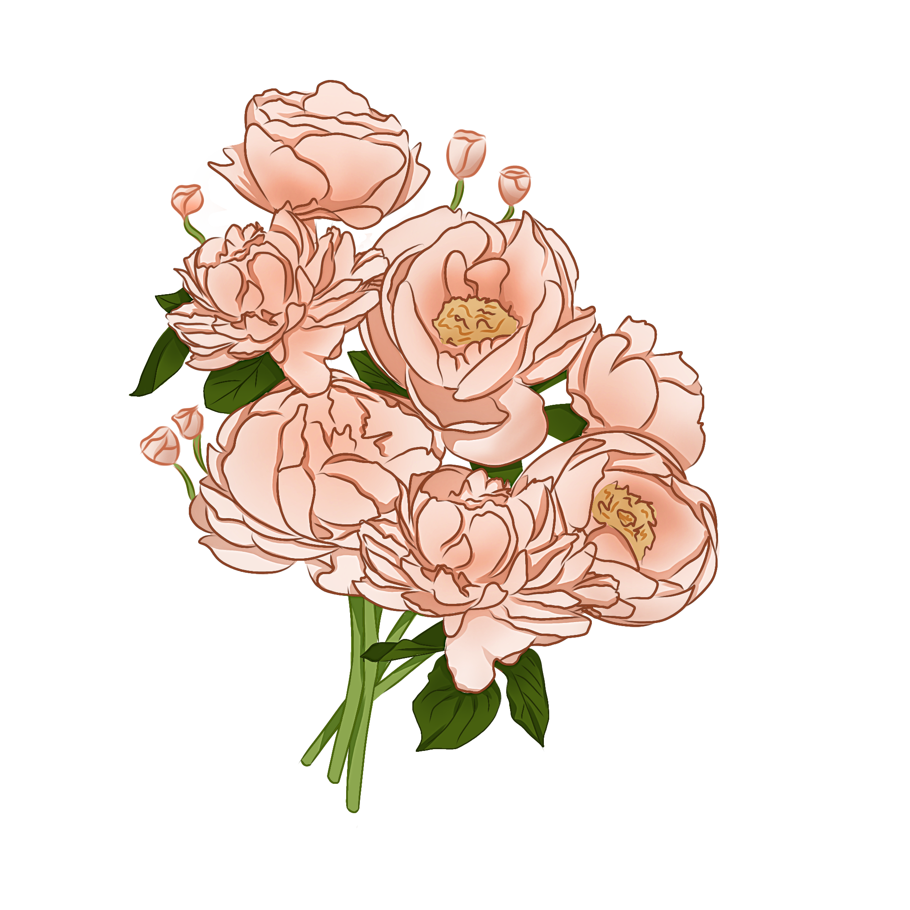
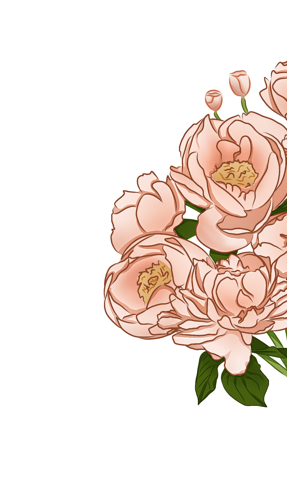
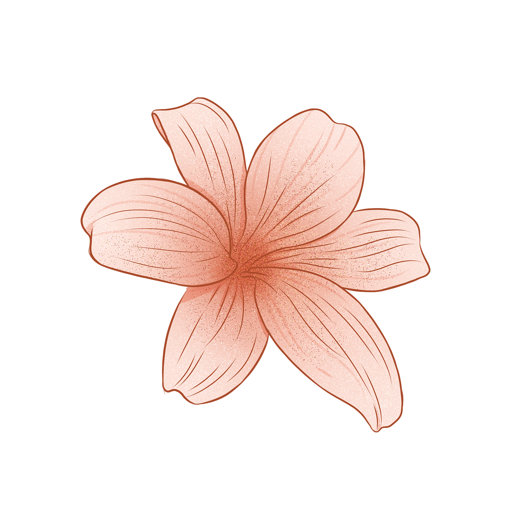

The Wedding of
Widy & Gilang
31 - 05 - 2026



31 - 05 - 2026

Di antara jutaan kemungkinan, semesta mempertemukan kami pada waktu yang tepat. Dengan hati yang mantap, kami memilih untuk berjalan berdampingan dalam pernikahan, menyatukan cinta dalam satu tujuan. Kami berharap Anda dapat hadir dan turut mendoakan langkah awal kami sebagai pasangan.
Putri dari Bp. Yayan Wahyan & Ibu Nurnaeni (Almh)

Putra dari Bp. Kusmana & Ibu Uka Sukaesih (Almh)


Semua berawal dari pertemuan yang tampak sederhana, tanpa rencana besar dan tanpa kami sadari akan membawa pada perjalanan yang begitu berarti. Seiring waktu, percakapan demi percakapan membuat kami saling mengenal lebih dalam. Kami belajar memahami perbedaan, menghargai kebiasaan, dan menemukan kenyamanan dalam kebersamaan. Dari hal-hal kecil yang kami lalui bersama, tumbuh rasa percaya yang perlahan berubah menjadi keyakinan. Hingga pada akhirnya, kami menyadari bahwa perjalanan ini bukan lagi tentang dua orang yang berjalan sendiri, melainkan tentang dua hati yang memilih untuk melangkah berdampingan menuju masa depan yang sama.
Kehadiran dan doa Anda adalah karunia terbesar bagi kami. Namun jika Anda ingin memberikan tanda kasih, berikut rincian:
Transfer Rekening:
Bank Mandiri – 1320021874137 a.n. WIDYANTI ASTUTI
Kirim Kado:
Jl. Leuwi anyar 1, Gg.Bp Eman RT06/RW04
Penerima: Widy
Silahkan konfirmasi kehadiran dibawah ini

Bandung, 31 - 05 - 2026